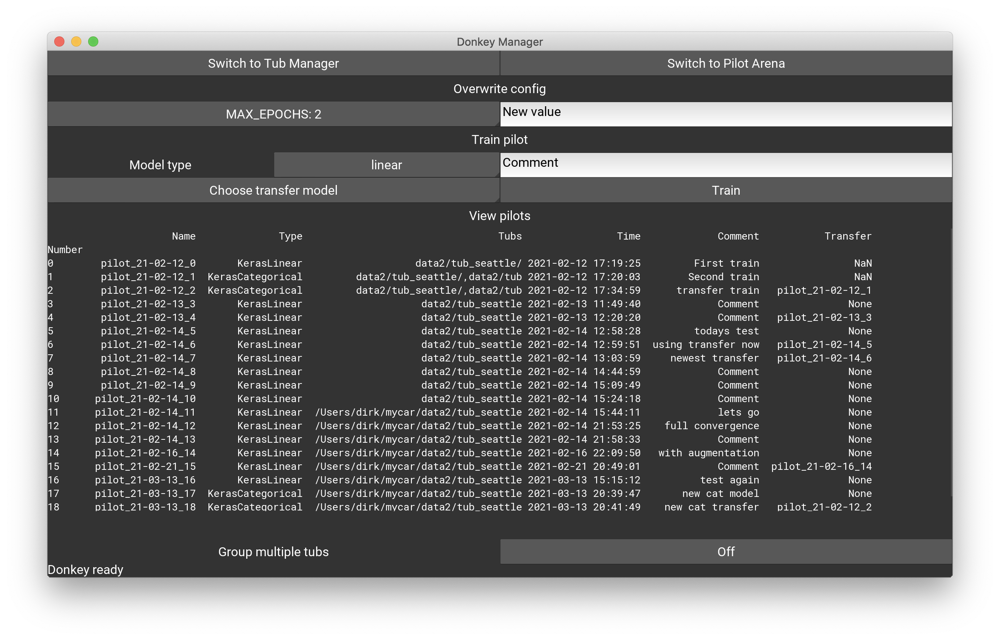

技巧汇总
其中的很多技巧是在不断的试错中尝试出来的.希望这些技巧能够帮助各位快速训练出准确的模型.
数据采集
采集数据的时候,数据的颗粒度如油门,角度(throttle, angle)这两个参数会对未来生成的模型产生很大的影响.因此数据采集的时候,如果使用RC
枪控的数据曲线要好于使用 PS3/XBOX 手柄,而使用手柄的数据会要比直接使用网页控制端的数据曲线好.
采集数据时, 在网页端可以设置限制最大速度,初级用户最好将油门限制在 30~40%之间,操作会更加平稳,随着熟练度的提高,逐步调整油门的大小,直到全油门漂移过弯.
在模拟器上驾驶的时候,在进入弯道时,松开油门,轻点刹车并转向可以实现漂移过弯的效果,前提是油门限制为0,速度为默认最大速度时.
- RC 操作技巧
RC枪控的扳机和转轮分别对应油门和转向.(throttle 和 angle)
在使用 RC 枪控操作驴车时,请注意不要猛的触发扳机,或者是猛打转向, 尽量请打方向,避免弹轮儿 情况出现.
弹轮儿意思是扭转方向轮到某个位置,顺手松开使其以原有的回弹力反弹回原位,这样会产生数据波动尖峰, 不利于数据模型的训练.
数据优化
在数据采集完成后,可以通过在命令行中输入:
donkey ui
启动donkey ui 的图形化界面进行数据的筛选, 参数的选择和模型类型选择,并且还可以通过剔除不好的记录信息,从而使整个数据集的数据一致性更好,训练的模型也会更加的稳定.



附加部件
什么是 Part
A part is a Python class that wraps a functional component of a vehicle. 一个 part 就是一个 python 的类, 可以添加一个功能到我们的驴车上. 这些包括:
- Sensors - 摄像头, 雷达, 速度计, GPS
- Actuators - 电机控制类
- Pilots - 道路检测, 克隆模型等等功能.
- Controllers - 基于网页或者蓝牙.
- Stores - Tub, 或者存储数据的方法
下面是一个示例显示如何使用 PiCamera part 去在每个驾驶的循环中发布一个图片到"cam/img" 通道.
V = dk.Vehicle()
# 创建并初始化camera part
cam = PiCamera()
#添加摄像头到vehicle.
V.add(cam, outputs=['cam/img'])
V.start()
剖析一个 part
所有部件(part) 共享同一个共同的结构,因此他们都可以由车辆的实例驱动在整个程序运行状态中不断运行和更新数据.
所有的部件都需要有一个"run" 或者" run_threaded" 功能,它有时候也需要inputs=['单引号','逗号分割']
这种输入的格式,也会在调用的时候生成类似outputs=['关键字', '逗号分割']的输出数据.
如果车的部件会抓取部分硬件资源信息, 类似摄像头和串口等设备, 在驴车停止的时候,那么它应该包含一个shutdown 的方法来释放资源.
下面举个例子: 一个 part 接受一个数字,然后与一个随机数字完成乘法运算并返回结果.
import random
class RandPercent:
def run(self, x):
return x * random.random()
把这个类添加到 donkeycar 的 vehicle:
V = dk.Vehicle()
# initialize the channel value
V.mem['const'] = 4
# add the part to read and write to the same channel.
V.add(RandPercent, inputs=['const'], outputs=['const'])
V.start(max_loops=5)
部件线程化
如果想要保证驴车运行的性能则需要保证 drive loop 必须保证在 10-30
次/秒,(检测数据来自: DRIVE_LOOP_HZ, 这个配置来自你的配置文件(myconfig.py),默认值是 20hz)
因此, 一些慢速的部件应该线程化(threaded)从而避免延长每个 drive loop 的时间.
一个线程化的部件需要去定义方法去运行在独立的线程上, 并且方法在被调用的时候能够非常快的返回当前最新的数据.
当你添加一个部件到车辆, 就是V.add之前, 创建的部件如果添加了theaded = True , 那么驴车主程序会调用部件的
run_threaded 方法去替代run方法,目前你可以参考下面的例子来实现.
V.add(RandPercent, inputs=['const'], outputs=['const'], threaded=True)
一旦你有一个"run_threaded" 方法, donkey 就会自动去寻找一个"update"方法并且在它自己的线程中运行它,
下面的例子是如何将RandPercent 部件线程化,如果这个部件需要运行一段时间才能完成的话,意思就是如果你的部件耗时长,就线程化,这样不会影响整个大循环.
import random
import time
class RandPercent:
self.in = 0.0
self.out = 0.0
def run(self, x):
return x * random.random()
time.sleep(1)
def update(self):
# the function run in its own thread
while True:
self.out = self.run(self.in)
def run_threaded(self, x):
self.in = x
return self.out
part.run: 方法是运行这个部件.part.run_threaded: 如果部件线程化,那么驴车主循环会以线程方式运行这个部件.part.update: 线程更新的方法part.shutdown关闭进程